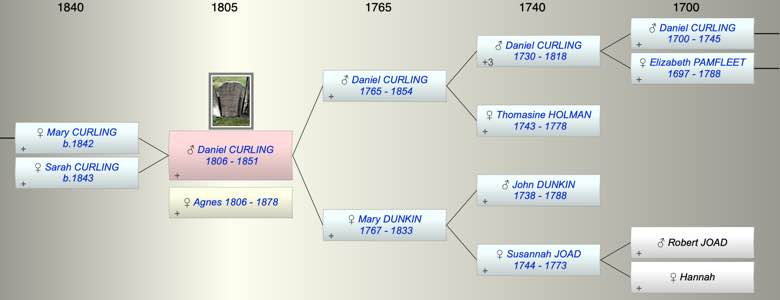

| [Index] |
| Daniel CURLING (1806 - 1851) |
|  |

|
| b. 23 Aug 1806 at St Laurence |
| +. Agnes (1806 - 1878) |
| d. 05 Sep 1851 at Trent Hills, Northumberland, Ontario aged 45 |
| Parents: |
| Daniel CURLING (1765 - 1854) |
| Mary Matson DUNKIN (1767 - 1833) |
| Children (2): |
| Mary Duncan CURLING (1842 - ) |
| Sarah Ann CURLING (1843 - ) |
| Grandchildren (1): |
| John K DINWOODIE (1878 - ) |
| Events in Daniel CURLING (1806 - 1851)'s life | |||||
| Date | Age | Event | Place | Notes | Src |
| 23 Aug 1806 | Daniel CURLING was born | St Laurence | Note 1 | ||
| 1833 | 27 | Death of mother Mary Matson DUNKIN (aged 66) | |||
| 10 Jan 1842 | 35 | Birth of daughter Mary Duncan CURLING | Ontario, Canada | ex 1901 Canada census | |
| 10 Sep 1843 | 37 | Birth of daughter Sarah Ann CURLING | Ontario, Canada | from 1901 Canada Census | |
| 05 Sep 1851 | 45 | Daniel CURLING died | Trent Hills, Northumberland, Ontario | Note 2 | |
| Note 1: bap St Laurence 27 Sep 1806 ex FMP PR |
| Note 2: buried Christ Church Anglican, aged 55 ex FMP |
| Personal Notes: |
|
Possibly went to Canada
1851 census living Seymour, Northumberland, Ontario Daniel Curling, farmer, aged 45 b England with Agnes 45, b Scotland, Mary D 11, and Ann S 9 both b Canada. 1861 ditto see http://person.ancestry.co.uk/tree/23597907/person/13300938668/facts |
| Created on a Mac™ using iFamily for Mac™ on 8 Oct 2023 |